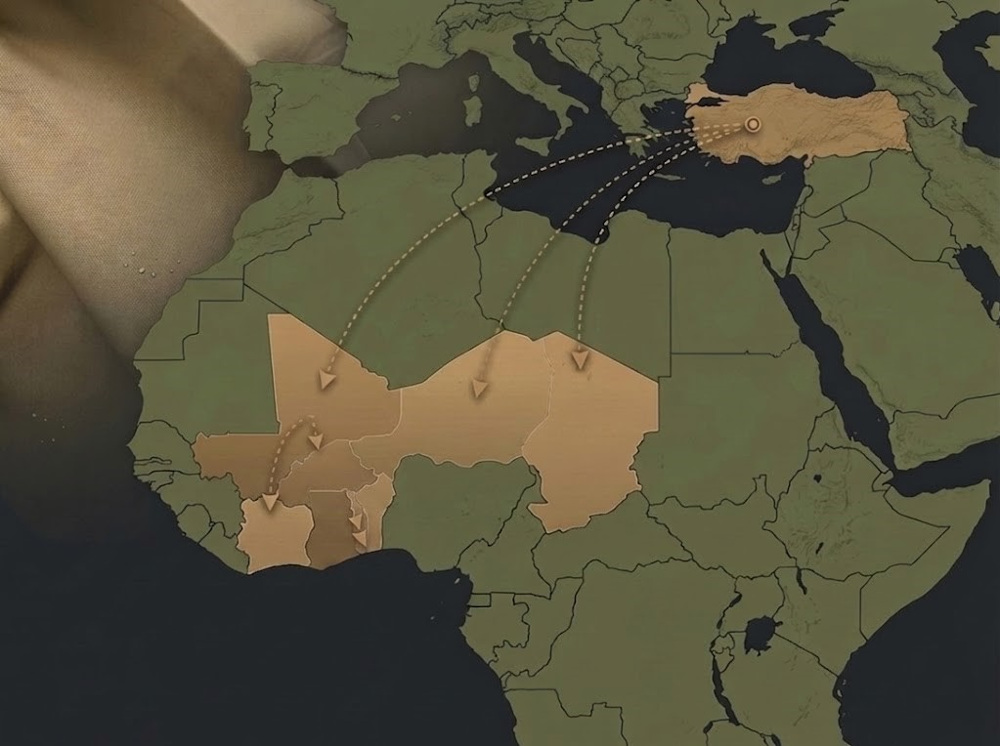

Nous fournissons des textiles militaires, des accessoires tactiques et des équipements spécialisés de haute qualité, exportés de la Turquie vers le continent africain avec une gestion d'approvisionnement professionnelle.
NK International agit comme un pont d'approvisionnement fiable entre les producteurs turcs de textiles et d'équipements militaires de haute qualité et les institutions du continent africain. Nous assurons la fourniture d'équipements durables et adaptés aux conditions du terrain.
Fourniture de vêtements tactiques, uniformes de combat, gilets balistiques et textiles techniques adaptés aux climats extrêmes.
Fourniture de sacs tactiques, casques, ceintures d'intervention, holsters et divers appareils nécessaires au personnel sur le terrain.
Gestion sécurisée du processus d'achat en Turquie et coordination de l'expédition vers l'Afrique via nos partenaires logistiques fiables.
Nos processus d'approvisionnement relient les fabricants de qualité en Turquie directement aux marchés d'Afrique de l'Ouest et de la région du Sahel, assurant des livraisons coordonnées et fiables.
